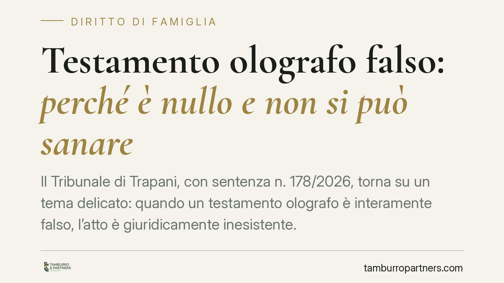

Testamento olografo falso: perché è nullo e non si può sanare
Il Tribunale di Trapani, con sentenza n. 178/2026, torna su un tema delicato: quando un testamento olografo è interamente falso, l'atto è giuridicamente inesistente. Non può essere confermato né sanato dagli eredi, a differenza di quanto accade per vizi meno gravi. Vediamo cosa significa per chi si trova davanti a una scheda testamentaria sospetta.

Il caso deciso dal Tribunale di Trapani
La pronuncia (giudice Di Rosa) affronta l'ipotesi del testamento olografo interamente apocrifo: non scritto, né firmato dal defunto, ma confezionato da un terzo. La verifica è passata da una consulenza tecnica d'ufficio sulla grafia, strumento ordinario quando si contesta l'autenticità della scheda.
La conclusione è netta. Quando la falsità riguarda l'intero documento, non si è di fronte a un testamento viziato, ma a un atto che non esiste come testamento. Da qui l'impossibilità di qualsiasi recupero successivo.
Inquadramento normativo
Il testamento olografo richiede tre requisiti, previsti dall'art. 602 cod. civ.: deve essere scritto per intero, datato e sottoscritto di mano del testatore. L'autografia non è un dettaglio formale: è l'essenza stessa dell'atto, perché garantisce che la volontà provenga davvero dal defunto.
L'art. 606 cod. civ. distingue due livelli di patologia. Il difetto di autografia o di sottoscrizione comporta la nullità; altri vizi di forma determinano solo l'annullabilità, che può essere fatta valere entro cinque anni. Ma la giurisprudenza, confermata dalla Cassazione, va oltre: se il documento è totalmente falso, non c'è neppure un testamento nullo da annullare. Manca l'oggetto stesso su cui operare.
Qui entra in gioco l'art. 590 cod. civ., che consente agli eredi di confermare o dare volontaria esecuzione a una disposizione testamentaria nulla, rinunciando a farne valere l'invalidità. È una norma pensata per tutelare la volontà del defunto quando il vizio è formale. Ma la conferma presuppone che una volontà del testatore esista. Se il testo è stato creato da altri, non c'è alcuna volontà da confermare: la sanatoria è esclusa in radice.
Cosa cambia in concreto
La differenza tra nullità e inesistenza non è teorica. Ha conseguenze pratiche rilevanti per chi contesta o difende una successione.
Primo profilo: la sanatoria. Un testamento nullo per vizio formale può essere "salvato" dalla conferma degli eredi ai sensi dell'art. 590. Un testamento interamente falso no. Nessun comportamento degli eredi — neppure l'esecuzione spontanea delle disposizioni — può dargli efficacia.
Secondo profilo: la pubblicazione notarile. Il fatto che un notaio abbia pubblicato la scheda non attribuisce autenticità al contenuto. La pubblicazione è un atto ricognitivo: certifica che il documento è stato presentato, non che sia stato scritto dal defunto. La falsità può emergere anche dopo.
Terzo profilo: l'onere della prova. Chi contesta la scheda e ne afferma la falsità deve agire con querela di falso o, secondo l'orientamento prevalente, con un'azione diretta ad accertare la non autenticità. La consulenza grafologica diventa spesso decisiva.
Quarto profilo: le ricadute penali. La formazione di un testamento falso può integrare il reato di falso in scrittura privata. È un piano autonomo rispetto alla causa civile sulla successione, ma spesso corre in parallelo.
Cosa fare in concreto
- Conservate l'originale. Non restituite né consegnate la scheda testamentaria sospetta senza che ne sia stata acquisita copia e tracciata la provenienza: l'originale è il materiale su cui lavora il perito.
- Chiedete subito una verifica grafologica. Raccogliete scritture di comparazione certe del defunto (lettere, documenti firmati, moduli) prima che vadano disperse.
- Valutate lo strumento processuale corretto. Querela di falso o azione di accertamento cambiano tempi e strategia: non agite prima di aver inquadrato l'ipotesi.
- Non date esecuzione spontanea alle disposizioni dubbie. Un comportamento concludente potrebbe essere interpretato come conferma, con effetti difficili da revocare.
- Verificate i termini. La nullità è imprescrittibile, ma le azioni collegate — penali e risarcitorie — hanno scadenze proprie.
La linea di confine tra vizio sanabile e atto inesistente è sottile e va valutata caso per caso. Consigliamo di sottoporre la scheda a un esame tecnico e giuridico preliminare prima di assumere qualsiasi iniziativa, difensiva o di contestazione.
---
Contributo informativo a cura di Tamburro & Partners - Avv. Giuseppe Tamburro. Non costituisce parere legale.
Ogni famiglia ha il suo equilibrio.
Separazione, divorzio, affidamento, assegno: se vuoi un confronto riservato su una specifica situazione, scrivi allo studio. Ti rispondiamo entro un giorno lavorativo.